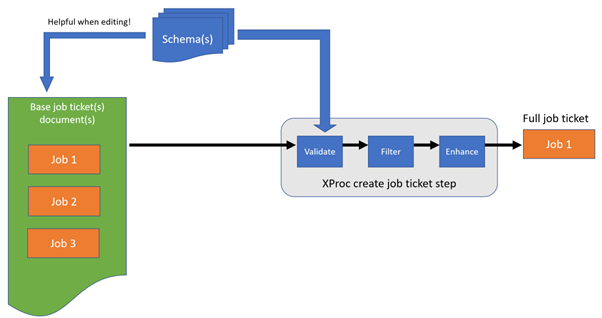

Of course, to be able to process a job ticket, we first need to acquire it. Basically this means: find out what needs to be done (for instance by inspecting the command-line arguments) and create it. In my case, it worked like this:
|  |
I created an overarching job ticket document that held tickets for several jobs, specified in some internal Domain Specific Language (DSL). Here’s a simplified example, just to give you an impression (the details and functionality do not matter here):
<jobtickets … > <application name="bgz" version="2017" source-project-name="zib2017-nl"> <setup usecase="kwalificatie" directory-id="bgzkwal"> <retrieve name="searchset.xml" url="…" directory-id="bgzkwal-instance"/> <copy-project-schemas> <include glob="*$USECASE.xsd"/> </copy-project-schemas> </setup> <build> <stylesheet href="../xsl/…"/> <input-document directory="@bgzkwal-instance" name="searchset.xml"/> <output directory="@bgzkwal/wiki_instance" name="wiki-bgz.txt"/> <parameter name="adaReleaseFilename" value="zib2017bbr-decor.xml"/> </build> </application> <application … > … </application> </jobtickets>
For a setup like this I would very strongly advocate the use of XML validation. Actually, my advice is to always create a schema for XML documents that are hand-edited, even when it’s “just” an internal data file:
When using a schema-aware editor (like oXygen), it helps you in creating and maintaining the file.
Consider adding a Schematron schema as well for the more difficult rules (like, for instance, identifier references). It’s really helpful when a minor typo in an obscure identifier get’s flagged immediately.
XProc has several validation steps. In fact, validation has become so easy, it’s almost criminal not to do it.
A next step would be to filter the main document, based on the job that needs to be done. In my case I threw
everything away that didn’t belong to the application I was handling. Assume the name of this application
is in a variable (or option) $application, then the code for this is a single line of XProc:
<p:delete match="/*/application[@name ne '{$application}']"/>
The next step in processing the job ticket proved crucial for the applicability of the job ticket design pattern: job ticket need to be enhanced. Enhancement here means: everything you can do or calculate up-front must be done first, before the actual processing starts.
When file or directory names are involved, calculate their full absolute values up-front. For instance, in
my case, names sometimes depended on global parameters (some main directory), attribute values of the current
and parent elements (subdirectories) and some global settings made elsewhere (version numbers, etc.). All this
was tricky to compute. Also: absolute file and directory names must be URIs (having
file:/// in front). You have to make sure this is the case before using them in XProc
steps.
XProc support the full XPath 3.1 language, so, yes, in theory, you could do these kinds of computations directly in your XProc pipeline. However, this would lead to very complicated and overly long XPath expressions, especially because XPath functions (which would help, a bit) are not (yet?) supported. I would recommend doing all these up-front enhancements in XSLT, which is a language much more suited to these kinds of things.
Here is an example of a snippet of an enhanced job ticket:
<application _target-dir="file:///C:/.../lab/3.0.0" _source-dir="file:///C:/.../lab/3.0.0" name="lab" version="3.0.0"> <setup _target-dir="file:///C:/.../lab/3.0.0/sturen_laboratoriumresultaten" _source-dir="file:///C:/.../lab/3.0.0/sturen_laboratoriumresultaten" usecase="sturen_laboratoriumresultaten" directory-id="slr"> <copy-data _target-dir="file:///C:/.../ada_instance_repo" _source-dir="file:///C:/.../sturen_laboratoriumresultaten/ada_instance_repo" target-subdir="ada_instance_repo" source-subdir="ada_instance_repo" directory-id="ada-instance-repo"> <include _pattern="\.xml$" glob="*.xml"/> </copy-data>
Target and source directories are computed at every level of the document (the __target-dir and
_source-dir attributes). When the job ticket processing wants to do something, based on one of
these elements, it can simply lift the URI from the applicable attribute.
Another enhancement here is that a UNIX-style glob was provided (the include/@glob attribute).
However, XProc works with regular expressions with regards to including/excluding files, so this glob had to be
converted into an XPath regular expression. This was added in the _pattern attribute.
One last thing about these kinds of data documents is that XProc makes it very easy to setup support for
includes. Create an include structure using XInclude <xi:include href="…"/> elements (the
namespace prefix xi is bound to the XInclude namespace
http://www.w3.org/2001/XInclude). In XProc, the <p:xinclude/> step does all the
work for you and flattens the document by resolving all the includes. That’s all there is to it.
When processing the resulting job ticket, we need take decisions about what to do, in my case based on
element names. In XSLT this would be rather simple: call <xsl:apply-templates> and write a
template for all applicable elements. However, XProc does not have such a mechanism. You’ll,
unfortunately, have to write dispatching code like this:
<p:for-each> <p:with-input select="/*/*"/> <p:choose> <p:when test="/*/self::copy-data"> … </p:when> <p:when test="/*/self::copy-schemas"> … </p:when> <p:when test="/*/self::build"> … </p:when> <p:otherwise> … (error) </p:otherwise> <p:choose> </p:for-each>